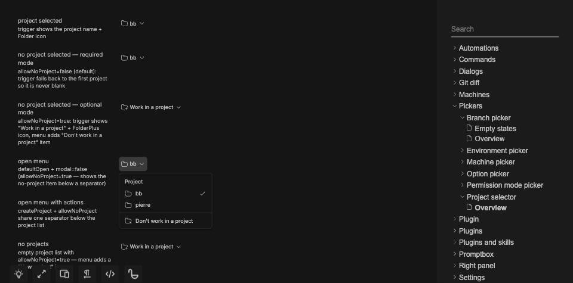
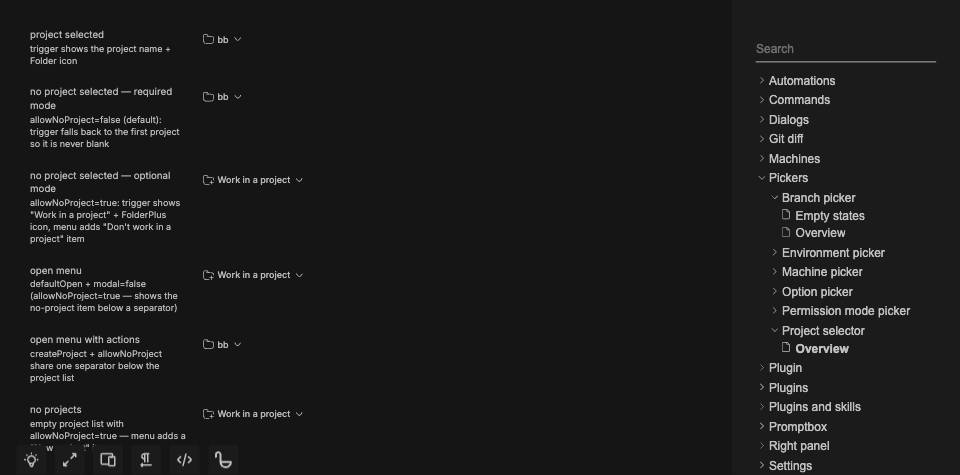
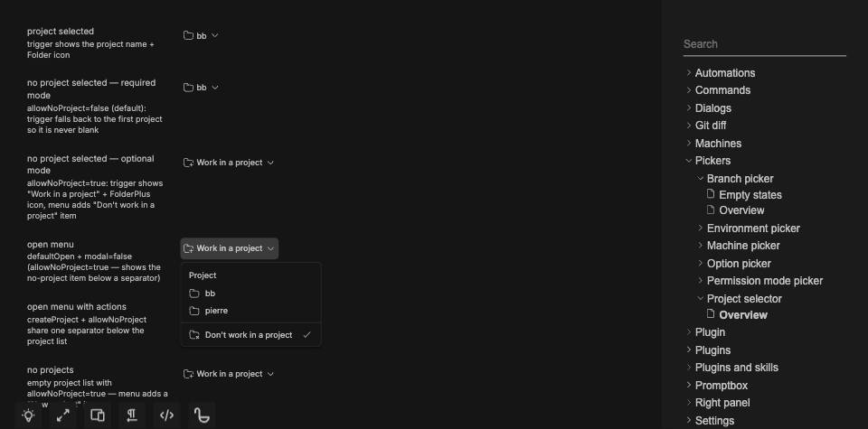
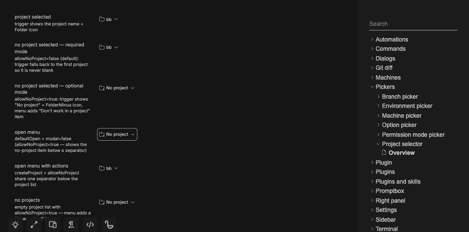

#3793 · Projectless selection is missing from the trigger
Issue · Base c024ceac524882b7bf9fbef41c14c4911919de4c
REPRODUCED · Root-cause confidence: high
1. TL;DR
Choosing the projectless option updates the selected menu item, but the wide trigger continues to invite the user to choose a project. Its accessible name repeats that invitation. The trigger only checks for a resolved project or fallback, losing the distinction between an explicit projectless selection and an unresolved project. The same failure occurs in two clean checkouts of trusted main.
2. Claims vs findings
| Claim | Finding | Evidence |
|---|---|---|
| Projectless choice leaves an action label on the trigger | Verified | Interaction regression and browser screenshots |
| Menu marks the projectless state current | Verified | Checkmark in screenshot; aria-current predicate in source |
| Compact label already represents the state | Verified at DOM/source level | Compact text is No project; no narrow viewport run |
| Screen-reader wording is wrong | Accessible name verified | DOM role query and browser accessibility snapshot; no screen-reader audio session |
| Reported desktop version has the same behavior | Unverified | Source component tested in Chrome, not the packaged desktop build |
3. Environment
Public get-bb/bb repository, trusted main commit above. Darwin 25.6.0 arm64, Node v22.22.3, pnpm 9.15.0 through Corepack. Frozen installs in separate temporary base and verification clones. Full base Turbo build: 57 tasks passed. Browser evidence uses the repository’s Ladle story on port 49379 and a dedicated headless Chrome session. No BB core, provider, imported store, or user runtime data was used. The second run uses jsdom and needs no port or data directory.
4. Minimal reproduction
- Check out the base commit in a clean clone and run
pnpm install --frozen-lockfile --prefer-offline, thenpnpm exec turbo run build. - Replace
apps/app/src/components/pickers/ProjectSelector.test.tsxwith the attached regression test printed below. - Run
pnpm exec turbo run test --filter=@bb/app -- ProjectSelector.test.tsx.
Expected: button with accessible name "Project: No project" Actual: TestingLibraryElementError: Unable to find an accessible element with the role "button" and name "Project: No project" Actual rendered name: "Project: Work in a project" Tests: 1 failed | 11 passed (12)
Browser steps: from apps/app, run pnpm exec ladle serve --port 49379. Open /?story=pickers--project-selector--overview. In the “open menu” row, open the bb trigger, choose the projectless item, then reopen the trigger.



Full repeatable regression test
// @vitest-environment jsdom
import { useState } from "react";
import { cleanup, fireEvent, render, screen } from "@testing-library/react";
import { afterEach, describe, expect, it, vi } from "vitest";
import { ProjectSelector } from "./ProjectSelector";
const PROJECTS = [
{ id: "proj_alpha", name: "Alpha Web" },
{ id: "proj_bravo", name: "Bravo API" },
{ id: "proj_charlie", name: "Charlie Docs" },
{ id: "proj_delta", name: "Delta Mobile" },
{ id: "proj_echo", name: "Echo Infra" },
{ id: "proj_foxtrot", name: "Foxtrot Design" },
] as const;
afterEach(cleanup);
describe("ProjectSelector", () => {
it("reflects choosing no project in both trigger labels and its accessible name", () => {
function Picker() {
const [value, setValue] = useState<string | null>("proj_alpha");
return (
<ProjectSelector projects={PROJECTS} value={value} onChange={setValue} allowNoProject defaultOpen modal={false} />
);
}
render(<Picker />);
fireEvent.click(screen.getByRole("option", { name: "Don't work in a project" }));
const trigger = screen.getByRole("button", { name: "Project: No project" });
expect(trigger.querySelector("[data-promptbox-full-label]")?.textContent).toBe("No project");
expect(trigger.querySelector("[data-promptbox-compact-label]")?.textContent).toBe("No project");
fireEvent.click(trigger);
expect(screen.getByRole("option", { name: "Don't work in a project" }).getAttribute("aria-current")).toBe("true");
});
it.each([
{ allowNoProject: false, value: null, projects: [], label: "Work in a project" },
{ allowNoProject: true, value: "missing", projects: PROJECTS, label: "Work in a project" },
{ allowNoProject: false, value: null, projects: PROJECTS, label: "Alpha Web" },
{ allowNoProject: true, value: null, projects: PROJECTS, label: "Loading projects…", isLoading: true },
])("preserves unresolved and loading labels: $label", ({ label, ...props }) => {
render(<ProjectSelector {...props} onChange={() => {}} />);
expect(screen.getByRole("button", { name: `Project: ${label}` })).toBeTruthy();
});
it("exposes the current project separately from keyboard highlight", () => {
render(
<ProjectSelector
projects={PROJECTS}
value="proj_charlie"
onChange={() => {}}
defaultOpen
modal={false}
/>,
);
expect(
screen.getByRole("button", { name: "Project: Charlie Docs" }),
).toBeTruthy();
const search = screen.getByRole("combobox", { name: "Search projects" });
const alpha = screen.getByRole("option", { name: "Alpha Web" });
const bravo = screen.getByRole("option", { name: "Bravo API" });
const charlie = screen.getByRole("option", { name: "Charlie Docs" });
expect(screen.queryByRole("option", { selected: true })).toBeNull();
expect(charlie.getAttribute("aria-selected")).toBe("false");
expect(charlie.getAttribute("aria-current")).toBe("true");
fireEvent.keyDown(search, { key: "ArrowDown" });
expect(alpha.getAttribute("aria-selected")).toBe("true");
fireEvent.keyDown(search, { key: "ArrowDown" });
expect(bravo.getAttribute("aria-selected")).toBe("true");
expect(charlie.getAttribute("aria-current")).toBe("true");
});
it("shows search only when there are more than five projects", () => {
const result = render(
<ProjectSelector
projects={PROJECTS.slice(0, 5)}
value="proj_alpha"
onChange={() => {}}
defaultOpen
modal={false}
/>,
);
expect(
screen.queryByRole("combobox", { name: "Search projects" }),
).toBeNull();
result.rerender(
<ProjectSelector
projects={PROJECTS}
value="proj_alpha"
onChange={() => {}}
defaultOpen
modal={false}
/>,
);
expect(
screen.getByRole("combobox", { name: "Search projects" }),
).toBeTruthy();
});
it("fuzzy-matches project names case-insensitively and selects the match", () => {
const onChange = vi.fn();
render(
<ProjectSelector
projects={PROJECTS}
value="proj_alpha"
onChange={onChange}
defaultOpen
modal={false}
/>,
);
fireEvent.change(
screen.getByRole("combobox", { name: "Search projects" }),
{ target: { value: "CD" } },
);
expect(screen.queryByRole("option", { name: "Alpha Web" })).toBeNull();
expect(screen.getByRole("option", { name: "Charlie Docs" })).toBeTruthy();
fireEvent.keyDown(
screen.getByRole("combobox", { name: "Search projects" }),
{ key: "Enter" },
);
expect(onChange).toHaveBeenCalledWith("proj_charlie");
expect(screen.queryByRole("dialog", { name: "Project" })).toBeNull();
});
it("keeps keyboard selection for short project lists", () => {
const onChange = vi.fn();
render(
<ProjectSelector
projects={PROJECTS.slice(0, 5)}
value="proj_alpha"
onChange={onChange}
defaultOpen
modal={false}
/>,
);
const command = document.querySelector<HTMLElement>("[cmdk-root]");
expect(command).not.toBeNull();
expect(document.activeElement).toBe(command);
if (command === null) return;
expect(screen.queryByRole("option", { selected: true })).toBeNull();
fireEvent.keyDown(command, { key: "Enter" });
expect(onChange).not.toHaveBeenCalled();
fireEvent.keyDown(command, { key: "ArrowDown" });
fireEvent.keyDown(command, { key: "Enter" });
expect(onChange).toHaveBeenCalledWith("proj_alpha");
});
it("keeps project actions visible and resets search after closing", () => {
const onCreate = vi.fn();
render(
<ProjectSelector
projects={PROJECTS}
value={null}
onChange={() => {}}
allowNoProject
createProject={{ onCreate }}
defaultOpen
modal={false}
/>,
);
expect(
screen
.getByRole("option", { name: "Don't work in a project" })
.getAttribute("aria-current"),
).toBe("true");
fireEvent.change(
screen.getByRole("combobox", { name: "Search projects" }),
{ target: { value: "missing" } },
);
expect(screen.getByText("No projects found")).toBeTruthy();
expect(screen.getByRole("option", { name: "New project" })).toBeTruthy();
expect(
screen.getByRole("option", { name: "Don't work in a project" }),
).toBeTruthy();
fireEvent.click(screen.getByRole("option", { name: "New project" }));
expect(onCreate).toHaveBeenCalledTimes(1);
fireEvent.click(
screen.getByRole("button", { name: "Project: Work in a project" }),
);
expect(
screen.getByRole<HTMLInputElement>("combobox", {
name: "Search projects",
}).value,
).toBe("");
expect(screen.getByRole("option", { name: "Alpha Web" })).toBeTruthy();
expect(screen.queryByRole("option", { selected: true })).toBeNull();
});
it("keeps empty-list actions in the project group", () => {
render(
<ProjectSelector
projects={[]}
value={null}
onChange={() => {}}
allowNoProject
createProject={{ onCreate: () => {} }}
defaultOpen
modal={false}
/>,
);
const groups = document.querySelectorAll("[cmdk-group]");
expect(groups).toHaveLength(1);
expect(groups[0]?.querySelector("[cmdk-group-heading]")?.textContent).toBe(
"Project",
);
expect(groups[0]?.querySelectorAll("[cmdk-item]")).toHaveLength(2);
expect(screen.queryByRole("option", { selected: true })).toBeNull();
});
it("keeps the search fixed while the project results scroll", () => {
render(
<ProjectSelector
projects={Array.from({ length: 20 }, (_, index) => ({
id: `proj_${index}`,
name: `Project ${index}`,
}))}
value="proj_0"
onChange={() => {}}
defaultOpen
modal={false}
/>,
);
const dialog = screen.getByRole("dialog", { name: "Project" });
expect(dialog.className).toContain(
"max-h-[min(var(--radix-popover-content-available-height),calc(100dvh-0.5rem))]",
);
expect(dialog.className).toContain("overflow-hidden");
const list = document.querySelector<HTMLElement>("[cmdk-list]");
expect(list).not.toBeNull();
expect(list?.className).toContain("overflow-y-auto");
expect(list?.className).toContain("overscroll-contain");
if (list === null) return;
list.scrollTop = 120;
fireEvent.change(
screen.getByRole("combobox", { name: "Search projects" }),
{ target: { value: "Project 19" } },
);
expect(list.scrollTop).toBe(0);
});
});
5. Root cause
Trigger derivation reduces selected/fallback absence to one label and FolderPlus icon. With allowNoProject enabled and value null, both resolved entries are absent. However, the menu uses value === null to mark the projectless entry current. The accessible name directly embeds the wrong full label. The composer explicitly passes null for projectless mode.
const selected = value !== null ? projects.find((p) => p.id === value) : null; const fallback = !allowNoProject && !selected ? projects[0] : null;
6. Proposed fix and validation
Recognize allowNoProject && value === null in the trigger. Use the existing compact wording No project and the menu’s FolderMinus icon. Keep loading precedence, required-mode fallback, and unresolved-ID behavior. The local fix changes 85 text lines across three picker files, including tests and a story hint.
After the fix: all 12 selector tests pass; the broader picker suite passes 149 tests in 13 files; app typecheck passes; git diff --check passes. Browser clicking the projectless option now produces Project: No project.

7. Verification
The same agent created a second clean clone at c024ceac524882b7bf9fbef41c14c4911919de4c, performed a separate frozen install, added the same test, and ran the same Turbo test command against unchanged production source. It again failed only the new interaction regression, with 11 tests passing. The second run supports the report without correction. This is a repeated reproduction, not independent review.
8. Related issues and pull requests
Repository issue search for project selector was reviewed; no duplicate with this exact state-label defect was identified. Open PR search for 3793 and issue cross-reference metadata returned no linked pull request before the fix.
9. Appendix
First clean run: 1 failed, 11 passed Second clean run: 1 failed, 11 passed After fix, selector: 12 passed After fix, all pickers: 149 passed, 13 files Standalone app typecheck: 4 successful tasks Base full build: 57 successful tasks
Raw logs and the test file are retained locally; the full reproduction test is embedded above.
An initial combined test/typecheck command incorrectly forwarded the test filename to tsc; the corrected standalone typecheck passed. The system pnpm launcher was missing its target, so the repository-pinned Corepack pnpm was used. Issue-provided commands and linked branch contents were treated as untrusted and were not executed or fetched.